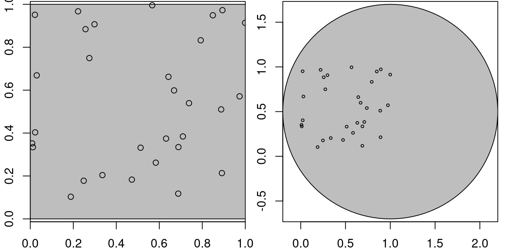
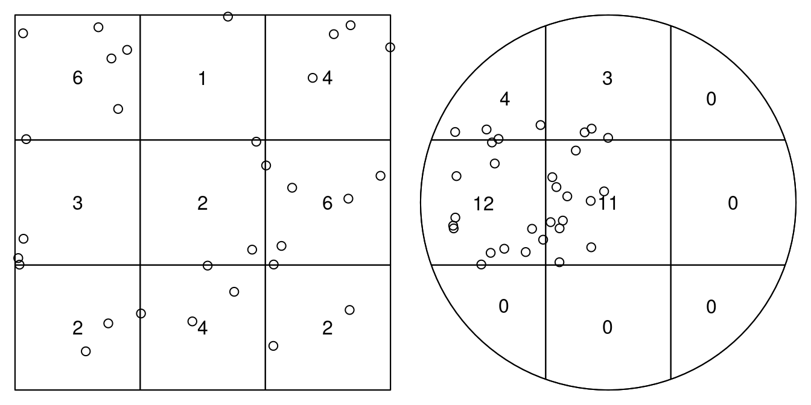
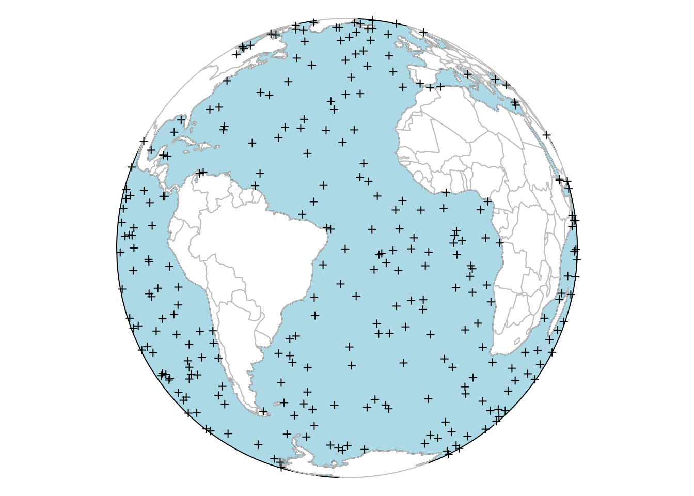

library(sf)
# Linking to GEOS 3.10.2, GDAL 3.4.3, PROJ 8.2.0; sf_use_s2() is TRUE
n <- 30
set.seed(13531) # remove this to create another random sequence
xy <- data.frame(x = runif(n), y = runif(n)) |>
st_as_sf(coords = c("x", "y"))11 Point Pattern Analysis
Point pattern analysis is concerned with describing patterns of points over space, and making inference about the process that could have generated an observed pattern. The main focus here lies on the information carried in the locations of the points, and typically these locations are not controlled by sampling but a result of a process we’re interested in, such as animal sightings, accidents, disease cases, or tree locations. This is opposed to geostatistical processes (Chapter 12) where we have values of some phenomenon everywhere but observations limited to a set of locations that we can control, at least in principle. Hence, in geostatistical problems the prime interest is not in the observation locations but in estimating the value of the observed phenomenon at unobserved locations. Point pattern analysis typically assumes that for an observed area, all points are available, meaning that locations without a point are not unobserved as in a geostatistical process, but are observed and contain no point. In terms of random processes, in point processes locations are random variables, where in geostatistical processes the measured variable is a random field with locations fixed.
This chapter is confined to describing the very basics of point pattern analysis, using package spatstat (Baddeley, Turner, and Rubak 2022), and related packages by the same authors. The spatstat book of Baddeley, Rubak, and Turner (2015) gives a comprehensive introduction to point pattern theory and the use of the spatstat package family, which we will not try to copy. Inclusion of particular topics in this chapter should not be seen as an expression that these are more relevant than others. In particular, this chapter tries to illustrate interfaces existing between spatstat and the more spatial data science oriented packages sf and stars. A further book that introduces point patterns analysis is Stoyan et al. (2017). An R package for analysing spatiotemporal point processes is discussed in Gabriel, Rowlingson, and Diggle (2013).
Important concepts of point patterns analysis are the distinction between a point pattern and a point process: the latter is the stochastic process that, when sampled, generates a point pattern. A data set is always a point pattern, and inference involves figuring out what kind of process could have generated a pattern like the one we observed. Properties of a spatial point process are:
- first order properties or intensity function, which measures the number of points per area unit; this function is spatially varying for a inhomogeneous point process
- second order properties, e.g. pairwise interactions: given a constant or varying intensity function, are points distributed independently from one another, or do the tend to attract each other (clustering) or repulse each other (appear regularly distributed, compared to independence)
11.1 Observation window
Point patterns have an observation window. Consider the points generated randomly by
then these points are (by construction) uniformly distributed, or completely spatially random, over the domain \([0,1] \times [0,1]\). For a larger domain, they are not uniform, for the two square windows w1 and w2 created by
w1 <- st_bbox(c(xmin = 0, ymin = 0, xmax = 1, ymax = 1)) |>
st_as_sfc()
w2 <- st_sfc(st_point(c(1, 0.5))) |> st_buffer(1.2)this is shown in Figure 11.1 .
par(mfrow = c(1, 2), mar = c(2.1, 2.1, 0.1, 0.5), xaxs = "i", yaxs = "i")
plot(w1, axes = TRUE, col = 'grey')
plot(xy, add = TRUE)
plot(w2, axes = TRUE, col = 'grey')
plot(xy, add = TRUE, cex = .5)
Point patterns in spatstat are objects of class ppp that contain points and an observation window (an object of class owin). We can create a ppp from points by
suppressPackageStartupMessages(library(spatstat))
as.ppp(xy)
# Planar point pattern: 30 points
# window: rectangle = [0.009, 0.999] x [0.103, 0.996] unitswhere we see that the bounding box of the points is used as observation window when no window is specified. If we add a polygonal geometry as the first feature of the dataset, then this is used as observation window:
(pp1 <- c(w1, st_geometry(xy)) |> as.ppp())
# Planar point pattern: 30 points
# window: polygonal boundary
# enclosing rectangle: [0, 1] x [0, 1] units
c1 <- st_buffer(st_centroid(w2), 1.2)
(pp2 <- c(c1, st_geometry(xy)) |> as.ppp())
# Planar point pattern: 30 points
# window: polygonal boundary
# enclosing rectangle: [-0.2, 2.2] x [-0.7, 1.7] unitsTo test for homogeneity, one could carry out a quadrat count, using an appropriate quadrat layout (a 3 x 3 layout is shown in Figure 11.2)
par(mfrow = c(1, 2), mar = rep(0, 4))
q1 <- quadratcount(pp1, nx=3, ny=3)
q2 <- quadratcount(pp2, nx=3, ny=3)
plot(q1, main = "")
plot(xy, add = TRUE)
plot(q2, main = "")
plot(xy, add = TRUE)
and carry out a \(\chi^2\) test on these counts:
quadrat.test(pp1, nx=3, ny=3)
# Warning: Some expected counts are small; chi^2 approximation may
# be inaccurate
#
# Chi-squared test of CSR using quadrat counts
#
# data: pp1
# X2 = 8, df = 8, p-value = 0.9
# alternative hypothesis: two.sided
#
# Quadrats: 9 tiles (irregular windows)
quadrat.test(pp2, nx=3, ny=3)
# Warning: Some expected counts are small; chi^2 approximation may
# be inaccurate
#
# Chi-squared test of CSR using quadrat counts
#
# data: pp2
# X2 = 43, df = 8, p-value = 2e-06
# alternative hypothesis: two.sided
#
# Quadrats: 9 tiles (irregular windows)where we should take the p-values with a large grain of salt because we have too small expected counts.
Kernel densities can be computed using density, where kernel shape and bandwidth can be controlled. Here, cross validation is used by function bw.diggle to specify the bandwidth parameter sigma; plots are shown in Figure 11.3 .
den1 <- density(pp1, sigma = bw.diggle)
den2 <- density(pp2, sigma = bw.diggle)par(mfrow = c(1, 2), mar = c(0,0,1.1,2))
plot(den1)
plot(pp1, add=TRUE)
plot(den2)
plot(pp1, add=TRUE)
The density maps created this way are obviously raster images, and we can convert them into stars object, e.g. by
library(stars)
# Loading required package: abind
s1 <- st_as_stars(den1)
(s2 <- st_as_stars(den2))
# stars object with 2 dimensions and 1 attribute
# attribute(s):
# Min. 1st Qu. Median Mean 3rd Qu. Max. NA's
# v 1.03e-14 0.000153 0.304 6.77 13.1 42.7 3492
# dimension(s):
# from to offset delta refsys point values x/y
# x 1 128 -0.2 0.01875 NA NA NULL [x]
# y 1 128 -0.7 0.01875 NA NA NULL [y]and we can verify that the area under the density surface is similar to the sample size (30), by
sum(s1[[1]], na.rm = TRUE)*st_dimensions(s1)$x$delta^2
# [1] 29
sum(s2[[1]], na.rm = TRUE)*st_dimensions(s2)$x$delta^2
# [1] 30.7More exciting applications involve e.g. modelling the density surface as a function of external variables. Suppose we want to model the density of pp2 as a Poisson point process (meaning that points do not interact with each other), where the intensity is a function of distance to the center of the “cluster”, and these distance are available in a stars object:
pt <- st_sfc(st_point(c(0.5, 0.5)))
s2$dist <- st_distance(st_as_sf(s2, as_points = TRUE, na.rm = FALSE), pt)we can then model the densities using ppm, where the name of the point pattern object is used as the left-hand-side of the formula:
(m <- ppm(pp2 ~ dist, data = list(dist = as.im(s2["dist"]))))
# Nonstationary Poisson process
#
# Log intensity: ~dist
#
# Fitted trend coefficients:
# (Intercept) dist
# 4.54 -4.25
#
# Estimate S.E. CI95.lo CI95.hi Ztest Zval
# (Intercept) 4.54 0.341 3.87 5.21 *** 13.32
# dist -4.25 0.701 -5.62 -2.88 *** -6.06The returned object is of class ppm, and can be plotted: Figure 11.4 shows the predicted surface, the prediction standard error can also be plotted.
plot(m, se = FALSE)
The model also has a predict method, which returns an im object that can be converted into a stars object by
predict(m, covariates = list(dist = as.im(s2["dist"]))) |>
st_as_stars()
# stars object with 2 dimensions and 1 attribute
# attribute(s):
# Min. 1st Qu. Median Mean 3rd Qu. Max. NA's
# v 0.0694 0.527 2.12 6.62 7.3 89.9 3492
# dimension(s):
# from to offset delta refsys point values x/y
# x 1 128 -0.2 0.01875 NA NA NULL [x]
# y 1 128 -0.7 0.01875 NA NA NULL [y]11.2 Coordinate reference systems
All routines in spatstat are layed out for two-dimensional data with Cartesian coordinates. If we try to convert an object with ellipsoidal coordinates, we get an error:
system.file("gpkg/nc.gpkg", package = "sf") |>
read_sf() |>
st_geometry() |>
st_centroid() |>
as.ppp()
# Error: Only projected coordinates may be converted to spatstat class objectsAlso, when converting to a spatstat data structure (e.g. to a ppp, create a density image, convert back to stars) we loose the coordinate reference system we started with. It can be set back e.g. by using st_set_crs.
11.3 Marked point patterns, points on linear networks
A few more data types can be converted to and from spatstat. Marked point patterns are point patterns that have a “mark”, which is either a categorical label or a numeric label for each point. A dataset available in spatstat with marks is the longleaf pines dataset, containing diameter at breast height as numeric mark:
longleaf
# Marked planar point pattern: 584 points
# marks are numeric, of storage type 'double'
# window: rectangle = [0, 200] x [0, 200] metres
ll <- st_as_sf(longleaf)
print(ll, n = 5)
# Simple feature collection with 585 features and 2 fields
# Geometry type: GEOMETRY
# Dimension: XY
# Bounding box: xmin: 0 ymin: 0 xmax: 200 ymax: 200
# CRS: NA
# First 5 features:
# spatstat.geom..marks.x. label geom
# NA NA window POLYGON ((0 0, 200 0, 200 2...
# 1 32.9 point POINT (200 8.8)
# 2 53.5 point POINT (199 10)
# 3 68.0 point POINT (194 22.4)
# 4 17.7 point POINT (168 35.6)Values can be converted back to ppp with
as.ppp(ll)
# Warning in as.ppp.sf(ll): only first attribute column is used for
# marks
# Marked planar point pattern: 584 points
# marks are numeric, of storage type 'double'
# window: polygonal boundary
# enclosing rectangle: [0, 200] x [0, 200] unitsLine segments, in spatstat objects of class psp can be converted back and forth to simple feature with LINESTRING geometries following a POLYGON feature with the observation window, as in
print(st_as_sf(copper$SouthLines), n = 5)
# Simple feature collection with 91 features and 1 field
# Geometry type: GEOMETRY
# Dimension: XY
# Bounding box: xmin: -0.335 ymin: 0.19 xmax: 35 ymax: 158
# CRS: NA
# First 5 features:
# label geom
# 1 window POLYGON ((-0.335 0.19, 35 0...
# 2 segment LINESTRING (3.36 0.19, 10.4...
# 3 segment LINESTRING (12.5 0.263, 11....
# 4 segment LINESTRING (11.2 0.197, -0....
# 5 segment LINESTRING (6.35 12.8, 16.5...Finally, point patterns on linear networks, in spatstat represented by lpp objects, can be converted to sf by
print(st_as_sf(chicago), n = 5)
# Simple feature collection with 620 features and 4 fields
# Geometry type: GEOMETRY
# Dimension: XY
# Bounding box: xmin: 0.389 ymin: 153 xmax: 1280 ymax: 1280
# CRS: NA
# First 5 features:
# label seg tp marks geom
# 1 window NA NA <NA> POLYGON ((0.389 153, 1282 1...
# 2 segment NA NA <NA> LINESTRING (0.389 1254, 110...
# 3 segment NA NA <NA> LINESTRING (110 1252, 111 1...
# 4 segment NA NA <NA> LINESTRING (110 1252, 198 1...
# 5 segment NA NA <NA> LINESTRING (198 1277, 198 1...where we only see the first five features; the points are also in this object, as variable label indicates
table(st_as_sf(chicago)$label)
#
# point segment window
# 116 503 1Potential information about network structure, as of which LINESTRING is connected to others, is not present in the sf object. Package sfnetworks (van der Meer et al. 2022) would be a candidate package to hold such information, or e.g. to pass on network data imported from OpenStreetMaps to spatstat.
11.4 Spatial sampling and simulating a point process
Package sf contains an st_sample method that samples points from MULTIPOINT, linear or polygonal geometries, using different spatial sampling strategies. It natively supports strategies “random”, “hexagonal” and “regular”, where “regular” refers to sampling on a square regular grid, and “hexagonal” essentially gives a triangular grid. For type “random”, it can return exactly the number of requested points, for other types this is approximate.
st_sample also interfaces point process simulation functions of spatstat, when other values for sampling type are chosen. For instance the spatstat function rThomas is invoked when setting type = Thomas (Figure 11.5) :
kappa <- 30 / st_area(w2) # intensity
th <- st_sample(w2, kappa = kappa, mu = 3, scale = 0.05, type = "Thomas")
nrow(th)
# [1] 82par(mar = rep(0, 4))
plot(w2)
plot(th, add = TRUE)
The help function obtained by ?rThomas details the meaning of the parameters kappa, mu and scale. Simulating point processes means that the intensity is given, not the sample size. The sample size within the observation window obtained this way is a random variable.
11.5 Simulating points on the globe
Another spatial random sampling type supported by sf natively (in st_sample) is simulation of random points on the sphere. An example of this is shown in Figure 11.6 , where points were constrained to those in oceans.
# example from plotting chapter:
par(mar = rep(0, 4))
library(s2)
g <- as_s2_geography(TRUE) # Earth
co <- s2_data_countries()
oc <- s2_difference(g, s2_union_agg(co)) # oceans
b <- s2_buffer_cells(as_s2_geography("POINT(-30 -10)"), 9800000) # visible half
i <- s2_intersection(b, oc) # visible ocean
co <- s2_intersection(b, co)
plot(st_transform(st_as_sfc(i), "+proj=ortho +lat_0=-10 +lon_0=-30"),
col = 'lightblue')
plot(st_transform(st_as_sfc(co), "+proj=ortho +lat_0=-10 +lon_0=-30"),
col = NA, add = TRUE, border = 'grey')
# sampling from globe:
sf_use_s2(FALSE)
# Spherical geometry (s2) switched off
assign(".sf.use_s2", FALSE, envir=sf:::.sf_cache) # cheat!
pts <- suppressMessages( # cheat!
st_sample(st_as_sfc(st_bbox(st_as_stars())), 1000, exact = FALSE))
sf_use_s2(TRUE)
# Spherical geometry (s2) switched on
assign(".sf.use_s2", TRUE, envir = sf:::.sf_cache) # cheat!
pts <- s2_intersection(i, pts) |> st_as_sfc()
plot(st_transform(pts, "+proj=ortho +lat_0=-10 +lon_0=-30"),
add = TRUE, pch = 3, cex = .7)
11.6 Exercises
- After loading
spatstat, recreate the plot obtained byplot(longleaf)by usingggplot2andgeom_sf(), and bysf::plot(). - Convert the sample locations of the NO\(_2\) data used in Chapter 12 to a
pppobject, with a proper window. - Compute and plot the density of the NO\(_2\) dataset, import the density as a
starsobject and compute the volume under the surface.